AI Academy · Level 1 · Grade 6 · Week 11 · Student lesson
Repeating Efficiently
Learn to understand, design, build, test and explain AI systems responsibly.
Project: Helpful Classroom Sorter
Before you start
Week 10: a condition can decide whether an action runs.
Plan time to read, investigate and explain. Keep predictions separate from observations.
Student lesson · 1 of 14
Your mission
Your learning target
I can trace a loop by testing its condition before every repetition.
I can distinguish the number of repetitions from the final value and include zero repetitions.
I can explain why an update reaches a stopping condition or why a faulty loop keeps repeating.
Remember before reading
Close your notes first. A rough first answer helps us choose the right starting point; it is not a score for your ability.
Without opening the old lesson, explain one key idea from If/Then Decisions. Give an example and a mistake that the idea helps you avoid.
Without opening the old lesson, explain one key idea from Features: Useful Clues. Give an example and a mistake that the idea helps you avoid.
Without opening the old lesson, explain one key idea from Pictures Become Numbers. Give an example and a mistake that the idea helps you avoid.
After trying, check the relevant lesson or ask your teacher. Change the part of your explanation that the evidence shows was wrong.
A loop repeats a useful step until a stopping condition is met.
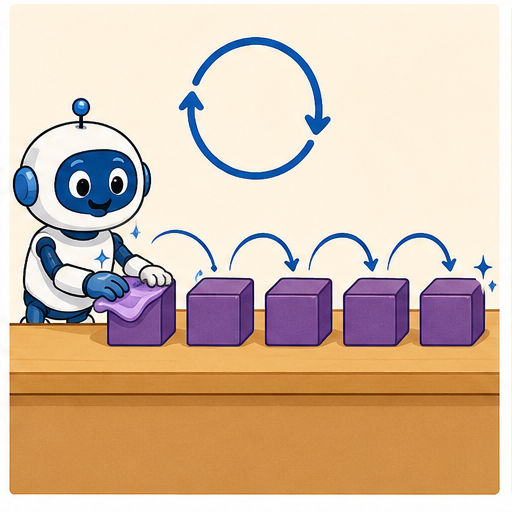
Learner name:
Readiness for the connected explanation
Score is 4. If score is below 5, add 3; otherwise subtract 2. Report and stop. Does reaching 7 cause another test? Explain.
This week’s end goal
By the end, I can check a loop condition before each update and count iterations.
Student lesson · 2 of 14
Notice the evidence
PICTURE STORY
Look Closely Before You Explain
Pictures give clues; evidence tells us what the clues mean.

What do you notice?
Name three visible details without explaining them yet.
Circle the detail most connected to the system's decision.
Name one detail that may be decoration or distraction.
Make a first prediction and state the clue that supports it.
My observations, prediction, and evidence:
A closer explanation
A paper counter starts at 1. While the counter is below 7, add 2 to it. When the test is false, report the counter and stop. The word while means test first, run the body only if true, then return to the test using the updated value. The body here is just add 2.
The counter follows 1, 3, 5, 7. At 1, 3 and 5 the condition is true, so each test is followed by one addition. At 7 the condition is false. No addition follows that final test. The loop has three iterations and reports 7.
Compare the Week 10 instruction if counter is below 7, add 2, then report. From 1 that single decision reports 3. A while loop explicitly returns to its test; an if decision does not. Draw a pointer to the instruction being executed instead of deciding for yourself when to repeat.
Student lesson · 3 of 14
See how it works
VISUAL MECHANISM
Input → Process → Output
Follow the information instead of imagining magic inside the machine.
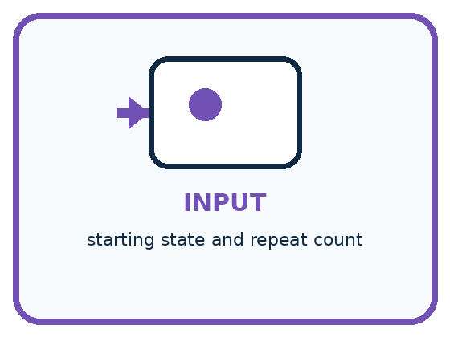
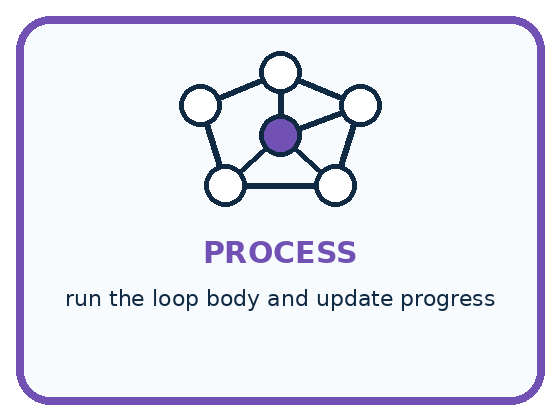
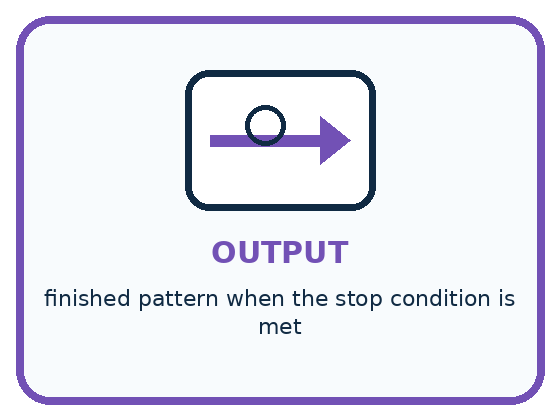
INPUT starting state and repeat count
PROCESS run the loop body and update progress
OUTPUT finished pattern when the stop condition is met
Draw a fresh example with all three stages:
A closer explanation
A complete loop trace
The trace has four tests but only three iterations. The false test is evidence that this run stops. A list ending at 5 would be incomplete, while a list continuing to 9 would include an addition the loop did not authorise.
Write the current value, the test result and the action on every row. Repeated values can matter: if the body does not change the state used by the test, the same true test may occur again. Do not erase these rows simply because they look unhelpful.
Connect the picture and the explanation
Point to the input, the deciding step and the result in this week’s visual. Explain the same step in ordinary words. A picture helps when you can say what each part represents.
Student lesson · 4 of 14
Compare the cases
PICTURE GALLERY
Four Cases, Four Clues
Use the visual cue, then read the evidence carefully.
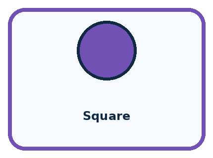
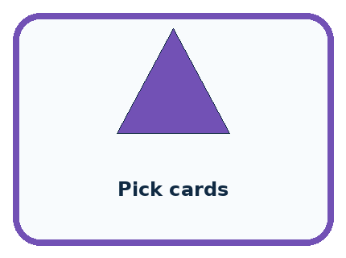
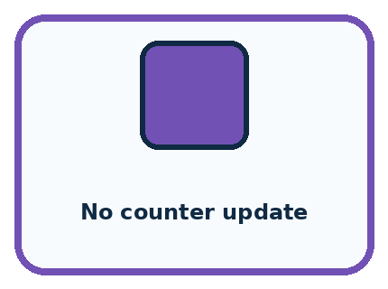
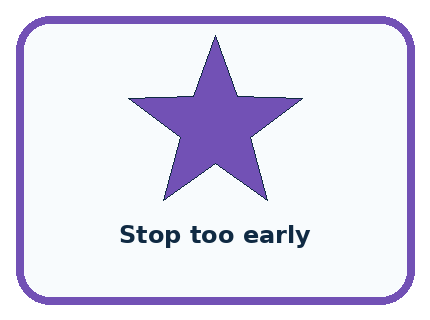
CASE 1 — Square Clue: repeat move and turn 4 times. Meaning: counted loop.
CASE 2 — Pick cards Clue: repeat until pile empty. Meaning: condition loop.
CASE 3 — No counter update Clue: condition never changes. Meaning: infinite loop risk.
CASE 4 — Stop too early Clue: one item remains. Meaning: off-by-one error.
Which two pictures are easiest to confuse? What evidence separates them?
Change one thing in the pictured case
Change: Start at 10 instead of 2.
Prediction: The loop runs zero times and reports 10.
Reason: Its first condition is already false, so no addition happens.
Student lesson · 5 of 14
Words that unlock the idea
VOCABULARY
Words You Can See and Use
The badge is a memory cue; the definition does the real thinking work.
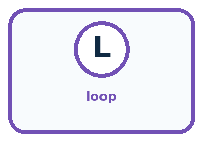
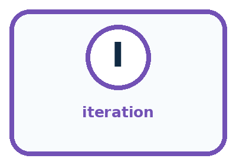
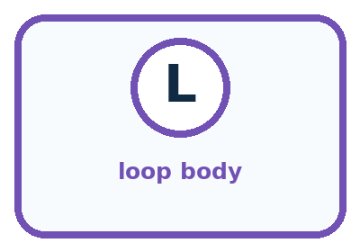
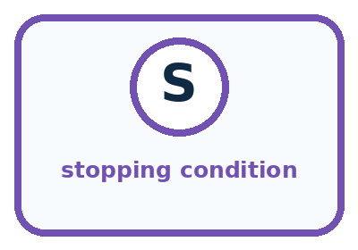
| Word | Meaning | My example |
|---|---|---|
| loop | control structure that repeats steps | |
| iteration | one pass through the loop | |
| loop body | steps repeated each time | |
| stopping condition | rule that ends repetition |
Misconception detective
CLAIM TO REPAIR A loop is just copying the same words many times.
Use one vocabulary word and one piece of evidence to repair it:
Words used in the closer explanation
| Word | Meaning |
|---|---|
| Body | The instructions performed on each iteration |
| Progress | A change that brings the state closer to a stopping condition |
Student lesson · 6 of 14
Follow a worked example
WORKED EXAMPLE
Watch the Reasoning, Not Just the Answer
Every step connects a claim to observable evidence.

STEP 1 — OBSERVE starting state and repeat count
STEP 2 — TRACE run the loop body and update progress
STEP 3 — CONCLUDE finished pattern when the stop condition is met
What new evidence could change this answer?
A closer explanation
| Starting counter | Values at successive tests | Iterations and reported value |
|---|---|---|
| 5 | 5 true then 7 false | 1 iteration and report 7 |
| 6 | 6 true then 8 false | 1 iteration and report 8 |
| 7 | 7 false | 0 iterations and report 7 |
| 8 | 8 false | 0 iterations and report 8 |
While tests before the body. If the first test is false, the body runs zero times. Do not add 2 once just because a loop is present. Starting at 7 or 8 is a useful test of this rule.
A loop that stops when the counter is no longer below 7 does not promise to finish at exactly 7. Starting at 6 produces 8. Passing the boundary is allowed by these instructions. Always report the actual final state instead of replacing it with the threshold.
Learn from the worked case
Cover the result before checking it. Say what is given, choose the procedure, and follow one step at a time. Then uncover the result and explain your first mismatch. Ask why a step is allowed, not only what number it produces.
A pictorial worked case: Repeating Efficiently
A fictional paper counter advances through a display until its condition becomes false.
The facts we will use
Start at 2. While the current counter is below 10, add 3.
Test before each addition; report when the condition is false.
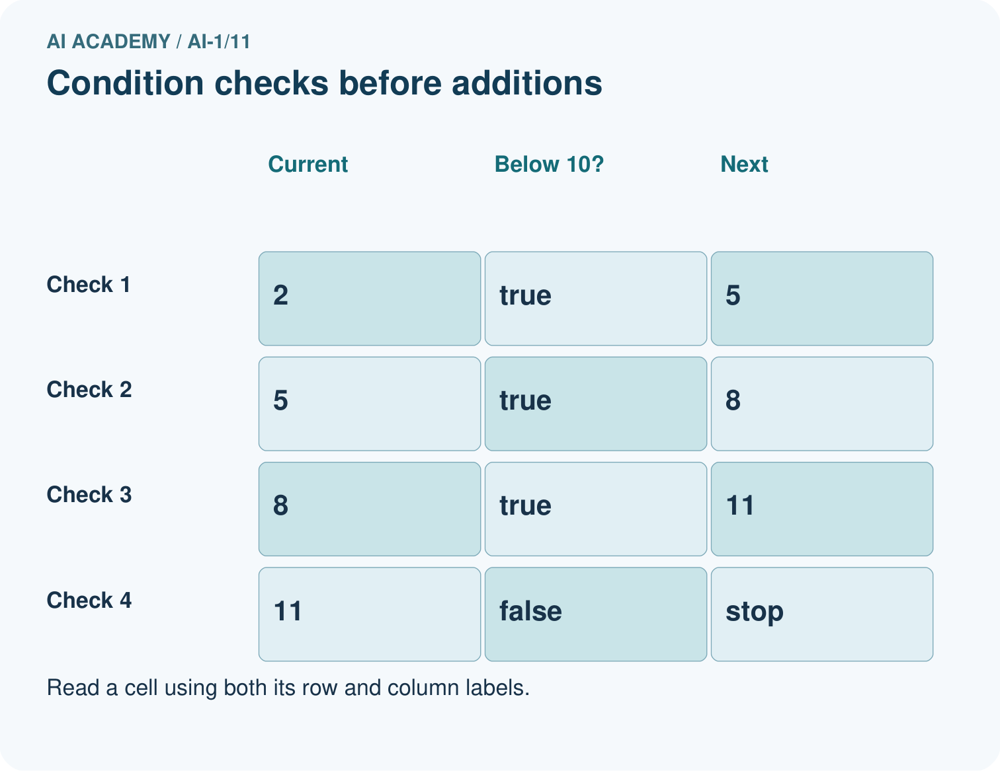
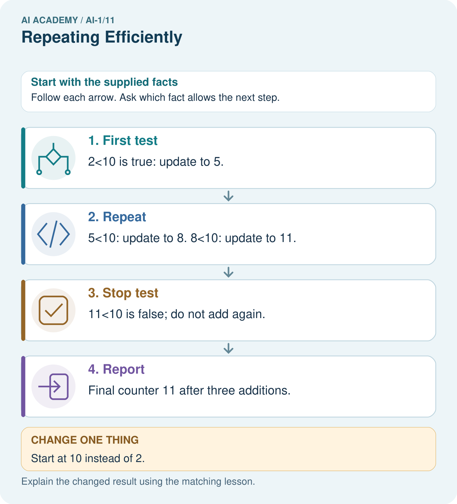
Read the picture one step at a time
Why this result follows
The condition checks whether to do the next update; it does not constrain every resulting value to stay below 10. The final 11 is therefore allowed by this procedure. Record both the condition and counter to distinguish a correct stop from an assumed endpoint.
What this example does not establish
This loop stops because positive increments eventually cross the limit. Other updates can fail to make progress.
Student lesson · 7 of 14
Find and repair a mistake
COMPARE
Same Result, Different Reason
A comparison helps reveal the true concept boundary.
| Case | Evidence | What it shows |
|---|---|---|
| Square | repeat move and turn 4 times | counted loop |
| Pick cards | repeat until pile empty | condition loop |
| No counter update | condition never changes | infinite loop risk |
| Stop too early | one item remains | off-by-one error |
Repair two tempting claims
CLAIM A A loop is just copying the same words many times.
Repair:
CLAIM B The stopping condition will become true by itself.
Repair:
A closer explanation
A different mistake says while counter is not equal to 7, add 2. From 6 the values are 6, 8, 10 and then larger even numbers. None is 7, so this equality test never becomes false. A growing number does not guarantee termination: the update must be able to reach a state that makes this particular test false.
Our paper examples use known whole numbers without a maximum size. For this lesson, an unreadable starting counter means pause and request the value. It does not mean start at zero. Later programs will need explicit rules for unavailable inputs and resource limits.
Student lesson · 8 of 14
Practise together
GUIDED PRACTICE
Try It, Check It, Explain It
Use support now so you can succeed independently later.

Explain how the picture story demonstrates this idea: A loop repeats a useful step until a stopping condition is met.
Use a fresh example to explain loop.
Trace a new input → process → output example.
Find and repair the error in: The stopping condition will become true by itself.
Invent one edge case and name the safe response.
A closer explanation
For our known whole-number counters below 7, adding 2 makes the counter larger each time. After enough additions it is at least 7, so the test becomes false. This explains why this loop stops for these inputs; one successful trace alone would not establish that for every possible procedure.
Now change the body to add 0. Starting at 1 gives the same value 1 at every test. Below 7 remains true, and the loop never reaches its reporting instruction. A classroom trace should be stopped by the teacher after the repeated state is established. That intervention is not a successful program result.
Practise with less help: Check the first test
Use workbook W2 for the connected example “Loops and stopping rules”. First fill the input and rule boxes. Try the middle steps before asking for a hint. After a hint, try the next step yourself.
| Plan | Do | Check |
|---|---|---|
| What is given? Which rule or procedure applies? | Record each intermediate step. | Does the result follow? What remains unknown? |
Explain your trace to a partner. Your partner points to one step to check. Swap roles on the next case. Each person writes their own explanation.
Check your reasoning
Use the worked case for Loops and stopping rules. Proposed explanation: “Every loop runs at least once”. Decide whether this explanation is supported. Point to the step or supplied fact that decides; explain your repair if needed.
Answer on your own before discussion. If you are unsure, say which step you need help with.
Explain the picture
Trace a fresh start of 9. How many additions occur, and must the report equal 10?
This is supported practice. Keep the separately named independent case for an attempt before feedback.
Student lesson · 9 of 14
Run the investigation
EXPLORER LAB
Loop Card Drawing
Predict first, test honestly, and explain what the evidence means.

State your prediction before the result is known.
Complete the task: Compress a repeated drawing algorithm using a loop card.
Keep a normal case and an edge case clearly separated.
Record what happened—even when it does not match your prediction.
Explain the result, one limitation, and the next useful test.
| Case | Prediction | Observed result | What it means |
|---|---|---|---|
| Normal | |||
| Edge |
Plan → try → check
Before trying: what do I expect, and why? While trying: which step could first go wrong? Afterwards: what did I actually observe, and what should change? Keep “not run” if you only traced the procedure.
Student lesson · 10 of 14
Build your understanding
PRACTICE LADDER
Climb from Recall to Defense
Each step asks for a stronger kind of understanding.

RECALL Define loop.
EXPLAIN A loop repeats a useful step until a stopping condition is met.
TRACE Show the input, process, and output.
DIAGNOSE Repair: A loop is just copying the same words many times.
TRANSFER Apply the idea to a new home or classroom case.
CREATE Design one revealing test.
DEFEND Give a claim, evidence, mechanism, limit, and safe action.
Student lesson · 11 of 14
Connect your project
PROJECT
Helpful Classroom Sorter
Build one coherent system across the year, one evidence-based decision at a time.

What real classroom need does this serve?
What information is necessary—and what should stay private?
What happens inside the process?
What normal and edge cases will you test?
When should it say not sure or ask a person?

My project decision:
Evidence for your project
Give any repeated sorter step an explicit stopping condition and trace a zero-iteration example.
Student lesson · 12 of 14
Show what you know
MASTERY
Fresh-Case Independent Proof
Complete this after teaching and guided practice have ended.

□ Name or draw the fresh case.
□ Trace input, process, and output.
□ State the conclusion and strongest evidence.
□ Name one limit, failure, missing clue, or fairness/privacy concern.
□ Explain one safe next action or improvement.
Independent evidence:
My level: □ Not yet □ With one hint □ Independently □ I can teach it
Student lesson · 13 of 14
Study a complete case
Week 11 Worked case
Use the supplied details to practise the weekly concept before attempting the independent question. This case extends the illustrated lesson.
The situation
Repeat take the next unstamped card and stamp it four times.
The question
How many cards are stamped? What assumption matters?
Worked explanation
Four, provided four unstamped cards exist and each repeat takes the next one. A limit or end-of-stack check prevents continuing indefinitely.
Explain it in your own words
Which detail supports the answer, and why does it matter?
Trace the supplied case visually
Repeat with a clear stopping point
| Evidence or stage | Value or result |
|---|---|
| Before | 0 stamped |
| Repeat 1 | 1 stamped |
| Repeat 2 | 2 stamped |
| Repeat 3 | 3 stamped |
| Repeat 4 | 4 stamped, stop |
Repeat take the next unstamped card and stamp it four times.
How many cards are stamped? What assumption matters?
Four, provided four unstamped cards exist and each repeat takes the next one. A limit or end-of-stack check prevents continuing indefinitely.
Student lesson · 14 of 14
Try a new case independently
Independent case: Transfer to a countdown
A paper countdown starts at 7. While remaining is above 1, subtract 2. When false, report and stop. Trace the run and count iterations. Repeat from 6 and from 1. Explain why the final value need not equal 1. What happens from 7 if subtract 2 is replaced by subtract 0?
Attempt this case before feedback. Record any help. Earlier examples below are further practice; a case already practised with feedback cannot establish fresh transfer.
Week 11 Independent application
Close the worked explanation. Apply the idea to this different question without copying.
Repeat clap then tap three times. Write the complete sequence. How many actions occur? What would happen if the stopping instruction were missing?
My answer, with a trace, calculation or supporting evidence
Create and test
Change one relevant detail. Predict the result before testing. Include a boundary or missing-information case when it helps reveal a limit.
My changed input and expected result
Connect to your project
Use a loop to process each item card in the test pile, with an explicit stop when no cards remain.
The evidence I will keep
Your teacher has the independent answer and scoring criteria. Complete the matching workbook week to keep your practice evidence together.
Transfer practice from the original programme
A robot stamps the next unstamped card until it has stamped five cards. Only three cards are available. Write a stopping rule that handles both limits and trace the number stamped.
Use feedback to improve
Attempt the independent case before hints. Record whether you worked alone, used a hint or followed a model. After feedback, fix the first unsupported step and explain why it changed. A later check uses a changed case, not a copied answer.